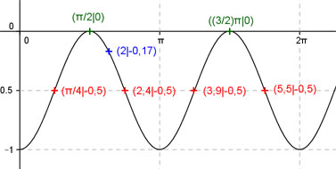

Aufgabe 212 Ergänzen Sie die Wertetabelle für x zwischen 0 und 2π: y = sin2 (x) - 1 x 2 0,785 oder 2,4 oder 3,9 oder 5,5 y -0,17 -0,5 Amplitude = 0,5 ; Periode = π ; sin2 x ist um 1 Einheit nach unten verschoben. Berechnung der Nullstellen: sin2 x - 1 = 0 |+1 --> sin2 x = 1 --> sin x = 1 --> x = arc sin 1 --> x = π/2 + k * π mit k = 0, 1, 2 --> x1 = π/2 oder 90° oder x2 = π/2 + π = (3/2)π oder 270°  Funktionswert an einer Stelle x ermitteln: 2 * 180° x = 2 oder ---------- = 114,6° π f(2) = sin2 (2) - 1 = sin (2) * sin (2) - 1 = sin2 (114,6°) - 1 = -0,17 gerundet. Berechnung der x-Werte für y = f(x) = -0,5 f(x) = -0,5 eingesetzt, existiert zweimal zwischen 0 und π bzw. 0° und 180° und zweimal zwischen π und 2π bzw. 180° und 360° (siehe Graph). sin2 (x) - 1 = -0,5 |+1 --> sin2 x = 0,5 |√ --> sin x = 0,707 --> x1 = arc sin 0,707 = 0,785 = π/4 oder 45° x2 = π/4 + π = (5/4)π = 3,9 oder 225° oder x3 = (π - π/4) = (3/4)π = 2,4 oder 135° oder x4 = (π + (3/4)π) = (7/4)π = 5,5 oder 315° gerundet